After the explosion of interest in VR in 2016-2017, interest also quickly disappeared. The VR market was disappointing: 5 million active VR devices versus 120 million video games consoles. VR gaming couldn't provide acceptable prices, stability of equipment and quality content. Despite this, the VR market is gradually developing and in 2019 there are new cheaper and more stable devices supporting a rising amount of high-quality VR content.
In this article, we will analyze the development of VR equipment, consider how modern virtual reality helmets work and what additional immersion technologies are on the market.
Positional tracking technologies
The question of determining the position of the object in space is relevant not only for VR, sailors and pilots need to understand where they are and where to keep the course. Engineers working on virtual reality systems are solving a similar problem.
Fun fact, speaking of navigation, at the dawn of virtual reality devices were designed to train military pilots and looked like an evil mushroom.
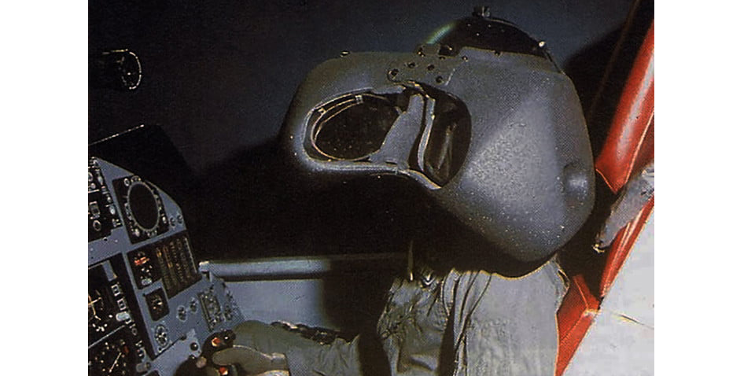There are several important characteristics of virtual reality systems:
- Delay. How quickly the system responds to changes in position.
- Accuracy. How precisely the system determines coordinates
- Number of objects. How many objects in space can be determined by the system (helmet, joysticks, additional items)
- Coverage area. How large is the area available for movement
- Sensitivity to the environment. For example, how sensitive the system is to external light or to nearby magnetic field distortions.
If the system characteristics perform with a large delay or lack accuracy, what we see does not coincide with the impulses from the vestibular apparatus (you turn the head, but he picture updates with a delay). In many people, this “mismatch” can cause a feeling of nausea.
The nature of this phenomenon is controversial, but there is a common hypothesis based our survival instinct. When in ancient times a person ate a poisonous plant affecting brain activity, they felt dizzy and the body experienced a similar “mismatch” between what it saw and what it felt. To get rid of toxic substances, instinct evoked sense of nausea with subsequent vomiting. The same survival instinct now keeps us from poorly calibrated positioning systems with low accuracy or a large delay.
Let's take a look at the main positioning systems and their features.
Inertial positioning system
The most common device is the inertial measurement unit (gyrostabilizer). IMU consists of several gyroscopes and accelerometers. The gyroscope determines the level of inclination, and the accelerometer – how speed has changed according to the change in coordinates.
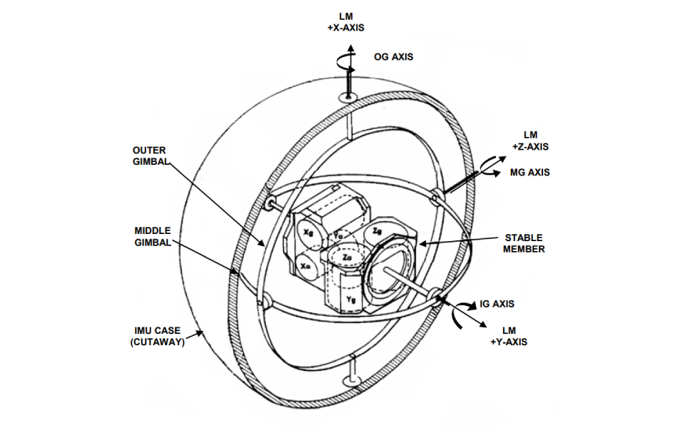The gyrostabilizer can't tell where the object is. It can only determine the acceleration by three coordinates. One way to get the path and coordinates is to integrate accelerations twice. But like any other positioning system, such a system gives a random measurement error that becomes quadratic when integrated. IMU-only systems accumulate these errors, which are never reset. The resulting error is called “drift” of inertial systems.
Therefore, virtual reality systems that use only IMU, such as Google Cardboard, give you three out of six degrees of freedom. They only allow you to look around, standing still.
Almost all industrial positioning systems have built-in IMU. It is quite stable and can work without visual input, so when the visual sensor of the system is obscured, the system switches to the IMU. When used for short periods of time, IMU positioning systems show little drift that can be disregarded in favor of overall good results.
To remove the error of integration IMUs are used with another independent positioning system, which constantly corrects the IMU. These systems work simultaneously and the final position is calculated on the basis of data from all of them using Kalman filters.
Acoustic positioning system
In acoustic positioning systems, several sound sources generate an ultrasonic signal, and the microphone system in the room performs trilateration. The position of the object is calculated from the geometry of the microphones.
On the other hand it has some significant disadvantages:
- The space between the transmitter and receiver should be completely empty not to distort sound waves. That's the reason Acoustic positioning is very rarely used in industrial positioning systems.
- Low refresh frequence
- Dependence on the environment. The speed of sound wave propagation depends on the temperature and humidity of the room.
Magnetic positioning system
The magnetic system is the first positioning system that can be used the virtual reality mass market. In such a system there is a source of electromagnetic field with three orthogonally arranged inductors and each monitored body is equipped with a sensor with three coils. The position is determined by the electromotive force induced in the sensor coils.
A similar principle is used in theremin, a musical instrument that produces sounds of different frequency depending on the position of the player's hands relative to the magnetic field around the receiver.
Magnetic systems are quite accurate, but they only operate at a short distance from the source of electromagnetic field. Because of that fall back modern VR barely uses magnetic positioning, while it's very popular in the medical field because of its high accuracy.
Optical positioning system
The most common positioning system at the moment. It works on the same principle as our eyes – the brain receives a stereo image from two sources and creates a three-dimensional image on top of it. Two different image sources allow our brain to assess the position of the object in space.
Take a look at Epipolar geometry and computer stereo vision" to learn more about stereo images.
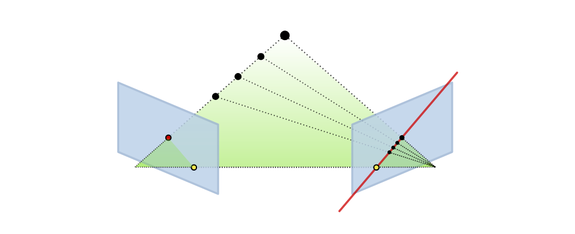Optical systems are divided into several subgroups: by the presence of markers and by the location of the camera.
Optical positional tracking with markers
Cameras are installed along the perimeter of the room, optical markers are attached to the sensors. Each sensor has its own pattern so that the system can distinguish the sensors from each other.
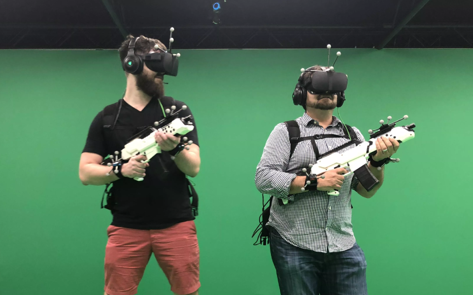Sensors can be passive (reflect light) and active (emit light). Active give more stable tracking and more accurate position determination.
Optical positional tracking without markers
In this case, instead of markers with fixed patterns, the system itself tries to find “anchors” on the image. The system determines the selection points (angles and faces) and then correlates the change in position of these points with the IMU data. One of these algorithms we will consider later.
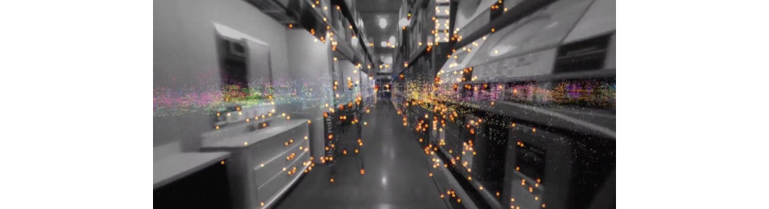Outside-in tracking in VR
Let's move on to the second parameter that categorises optical systems – the position of the camera. In Outside-in systems, objects are tracked with a camera fixed at a stationary location. As long as the objects are within the range of the camera, the positioning works quite well. The classic representative of such a system is Playstation VR.
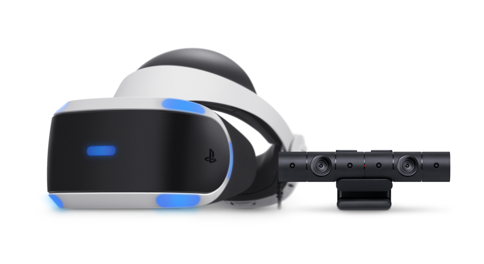Inside-out tracking in VR
In this case, the cameras are installed on the VR-devices. Inside-out devices then gives you a considerably more freedom to move compared to Outside-in devices. Both leading VR headsets, HTC Cosmos and Oculus Quest, mostly use this positional tracking system.
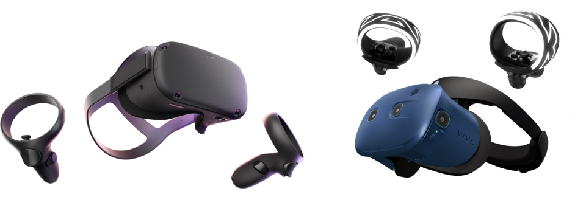VR Headsets for gaming
Oculus Rift
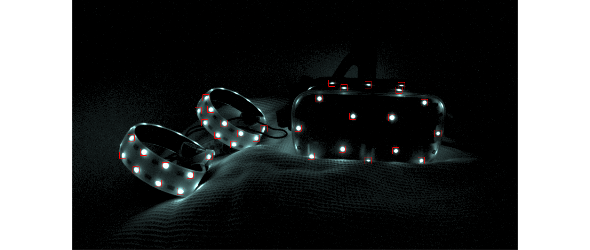Oculus Rift uses the Outside-in positioning method called “constellation.” The headset and controllers have infrared markers invisible to the bare eye. The infrared camera is installed in front of the play area and determines the position of the markers. The resulting image is rendered in the headset for the player to see.
Also, the headset and controllers have an IMU installed. The final position of the devices is calculated according to the data from the IMU and the optical sensors.
HTC Vive
In the Lighthouse positional tracking system, sensors are placed inside the headset, in contrast to Rift, where the sensor calculating the position is outside.
The play area is surrounded by base stations. HTC Vive headset has a photodiode system that detects infrared radiation emitted from the base stations. Inside the base stations, there are two stepper motors that spin two infrared lasers at a constant speed with a Fresnel lens scattering the laser into a plane. The algorithm is as follows:
- Base station #1 produces a big flash and it signals the other base station to stop working. All photodiodes reset the timer and start the countdown.
- When the horizontal laser plane crosses the photodiode, the photodiode remembers the time. Given that the speed of the motor is preset and constant, the device can calculate the angle between the photodiode and the station.
- Then the procedure repeats for the vertical plane.
- The calculated angles of each photodiode are converted to the position of an imaginary camera, and for that group of photodiodes a PnP problem is solved.
We used the Lighthouse system for one of our projects, and as it turned out, there are a lot of nuances that worsen the stability of Vive's tracking system:
- Direct sunlight entering the play area. We had to work in constant shadows with blinds down.
- Presence of reflective surfaces in the play area (mirrors, glass).
- Sensitivity electromagnetic noise at a frequency of 2.4 GHz. That kind of interference can be a result of a large number of WiFi routers working around the play area or a broken microwave being nearby. If you are thinking of opening a VR Arcade with HTC Vive, don't do it in a shopping mall or anywhere where many people are likely to use WiFi.
- The instability of SteamVR platform. Lighthouse needs SteamVR software for proper functioning, but the platform itself doesn't always work properly. Usually, to solve positioning problems, you need to turn SteamVR off and on again.
Oculus Quest
Quest, similar to HTC Cosmos, use Inside-out optical positioning systems. No additional sensors or stations are required around the play area.
Oculus Quest looks magical from the outside. You put your helmet on, and it starts working:
- You don't need to prepare the room.
- You don't need to have a computer connected.
- Hence there are no wires (I thought this, although being evident from the above, merits it's proper bullet).
- There are almost no restrictions on the area of playing space (I walked out from our office on the sixth-floor to a nearby cafe and Oculus still could track the starting point).
- The cost of the device is $400 (compared to almost $3000 total cost of HTC Vive+MSI VR One powering it).
On the downside, Oculus Quest has less powerful hardware if compared to a PC so that AAA games won't run. However, as a user, I am thrilled with Oculus Quest.
Technologies behind free roam games
In VR games, there are a few movement mechanics:
- The player can move, and the distance covered by their avatar in VR equals the distance the player covers in the play area.
- The player stands still and can teleport their avatar in VR.
- The player stands still and can move their avatar backward and forward with controller buttons. The latter option greatly reduces the level of immersion in virtual reality. There are though several technologies to address this issue.
Kat VR Treadmill
A Chinese-American company that develops treadmills for virtual reality. You put on special shoes, stand on the treadmill; the treadmill tracks your movements and transfers data to your avatar. Kat VR Mini costs around $5000.
The company is now raising money on Kickstarter for its new product “KAT Loco”. Ankle sensors detect jumping from one foot to another, and that counts as walking.
Optitrack motion capture solution
Optitrack is the leader of free roam solutions on the market used by major VR arcade franchises, like SandboxVR and TheVoid, use Optitrack.
Optitrack cameras are installed throughout the play area to track both movable and immovable objects. Optitrack produces its own cameras to insure a high update frequency and high resolution.
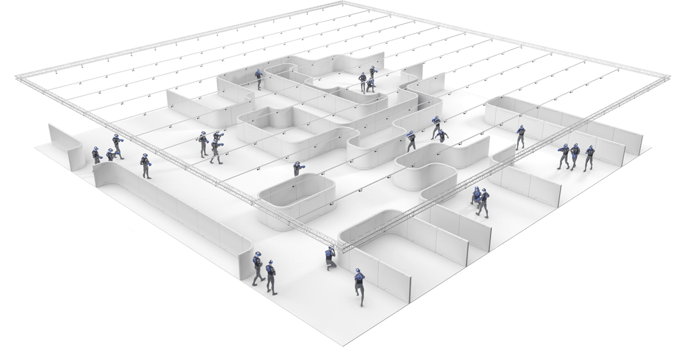The biggest disadvantage is the cost. An area of 30 by 30 meters for 48 objects (12 people) costs $500.000 as shown in the screenshot of price calculator from the Optitrack website.
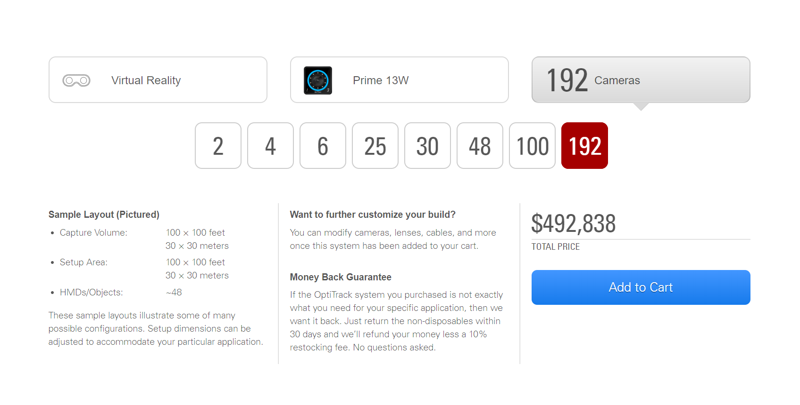Simultaneous localization and mapping
An Optitrack alternative is Inside Out systems. Its main representative is SLAM (Simultaneous localisation and mapping) algorithm that is already used in the latest HTC Vive Cosmos and Oculus Quest. The camera attached to the headset analyzes the environment and builds a map of the room. The controllers work on the IMU and the headset cameras determine the position of the controllers by movement patterns.
The greatest thing about SLAM is the ability to use any room for VR and almost no space restrictions. On the other hand, there is no support for additional items, as there are no static cameras and sensors that can track them.
What makes the most immersive VR games
VR used to copy videogames realities where the player was an incorporeal creature lucky to have hands (sometimes hands also were no option). It didn't influence the gameplay; it just didn't seem very real. Now many VR games and applications allow users to see their full-bodied VR avatar and interact with physical objects.
VR weapons
HTC has trackers that can be attached to weapons, like baseball bats, guns, and torches. Feeling the weight and momentum of a bat when you swing it gets immersion to the next level.
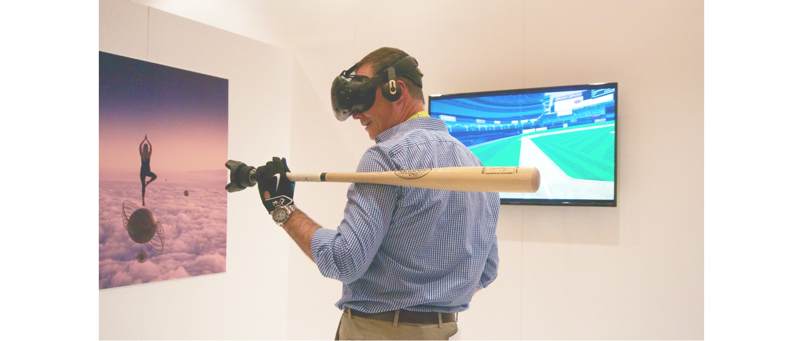Full body tracking in VR
The kinematic model of a person allows you to see the whole body in VR. Typically, you need sensors are attached to every major joint to create a model, but a VR avatar can also be built with only 5 sensors attached to hands, feet and head. Of course, the more sensors you get the greater the accuracy is.
Haptic gaming vests and suits
Headsets provide input for two of our senses, sight and hearing, and while taste and smell are still off-limits, there is a way to input touch. With a vibration vest on you can feel the blows drawn at you. You might have already heard about the bHaptics company and their devices.
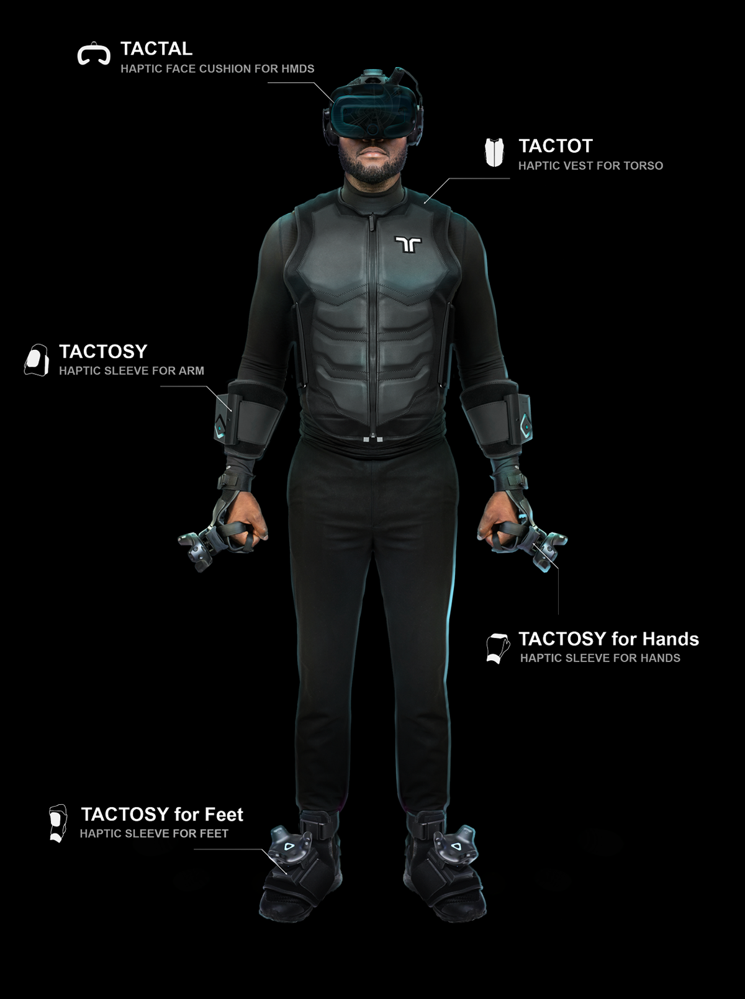In addition to the vest, they develop sleeves for hands, arms, and feet and cushions for the face.
Another company is TeslaSuit. Judging by the description, in addition to the feeling of touch, the suit will allow you to feel warmth and cold. The suit is not available even for pre-order yet though.
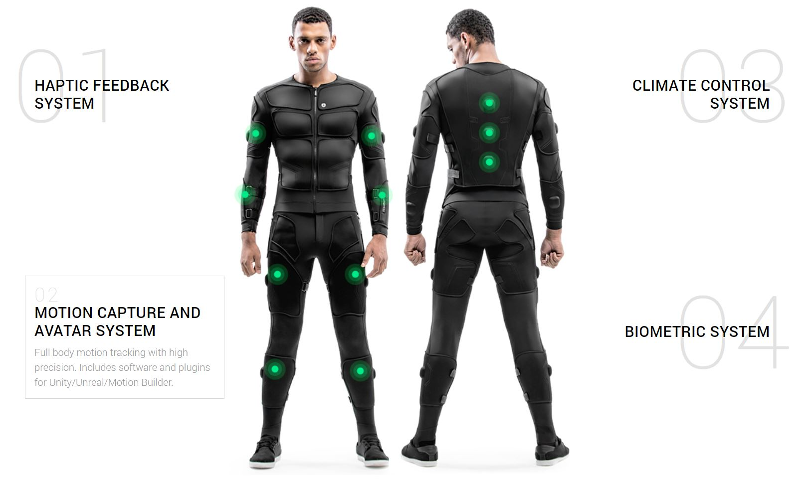VR hand gloves
Leap Motion used to develop an infrared sensor that can be attached to any VR headset, which would not only track the position of your hands but the position of your fingers too. There was one restriction, that sort of robbed LeapMotion of its coolness; tracking would only work if you don't have anything in your hands. Also, any non-standard hand positions were tracked extremely poorly and you couldn't use any controllers.
Last year the company was rumored to be sold to Apple, but in the end, the deal did not take place. In May of 2019, LeapMotion was bought by UltraHaptics for $30 million. At the peak of popularity in 2013, Leapmotion estimated at 300 million.
The Haptxgloves company develops VR gloves that allow you to feel the weight and volume of objects. So far, they look rather shabby. Early Access is available on the Haptxgloves website.
Summary
The virtual reality market continues to develop slowly. There are new cheaper and more stable virtual reality systems, and additional equipment allows you to dive into VR even more.
Recently we've got my hands on Oculus Quest so that a review will follow soon. Stay tuned!
Read similar articles
Our Oculus Quest review
In this blog post we tell why our Virtual Reality department unanimously fell in love with Oculus Quest and out of love with HTC Vive.
Learn more 6 min readTop 36 Mobile App Development Software in 2019
We've made up a list of mobile development tools so you can compare features, prices, and ratings about each tool to choose what fits you.
Learn more 11 min read
Digital Identity: Blockchain’s Killer Dapp
Blockchain is immutable, it cannot be tampered with, and it has levels of permissioned viewing, which allows it a perfect choice for digital identity solutions.
Learn more 10 min read